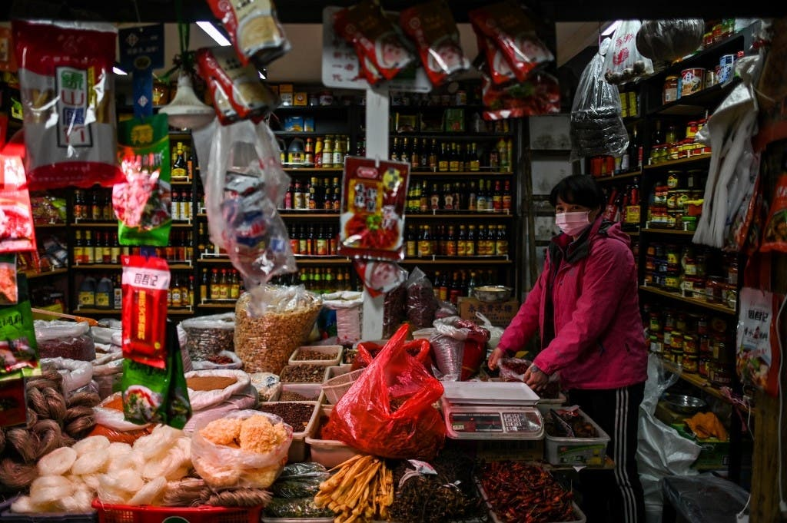
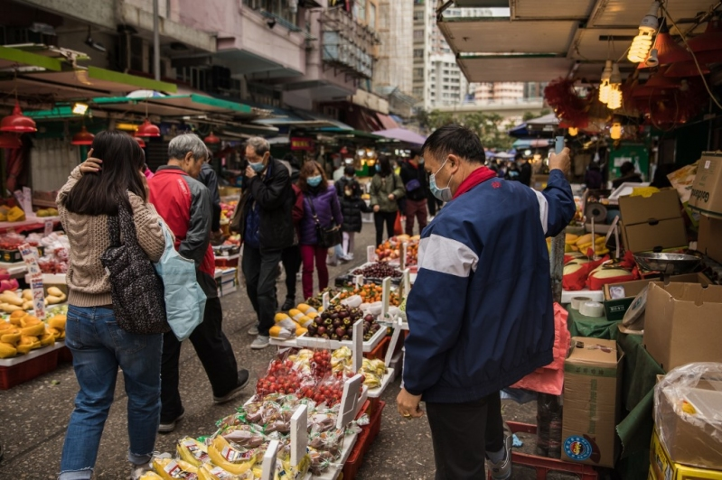
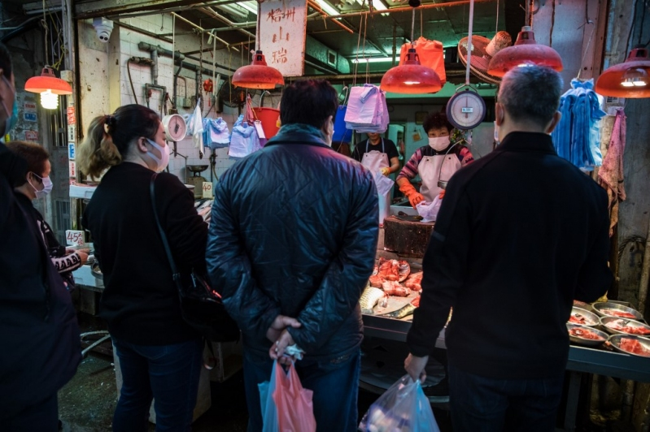
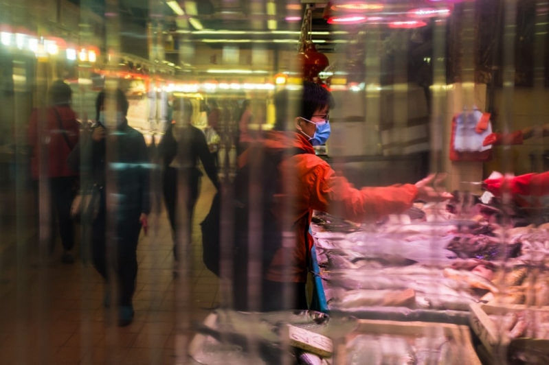
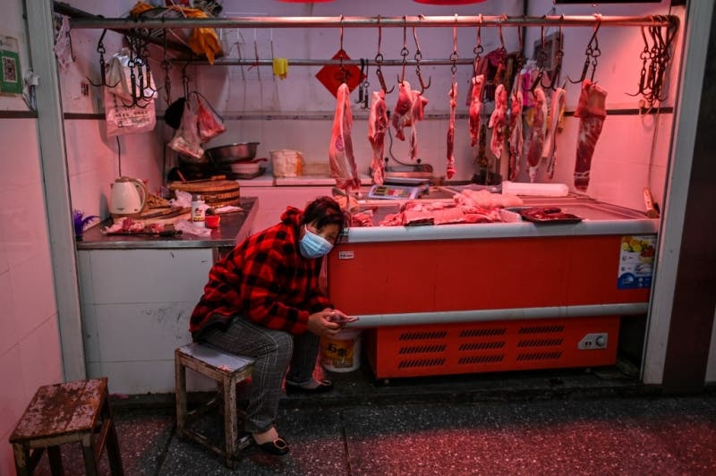
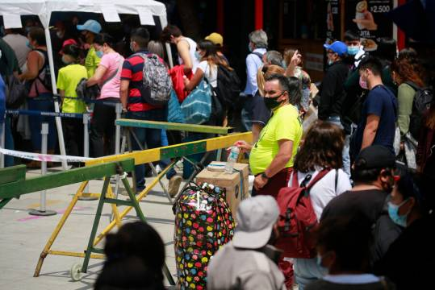
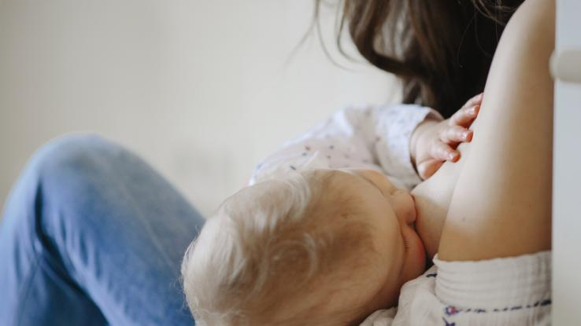

El revelador testimonio del primer caso de coronavirus reconocido por China: una vendedora de Wuhan

Wei Guixian considerada la 'paciente cero' vendía camarones en el mercado de mariscos de Huanan y el 10 de diciembre comenzó a sentirse mal.
Una mujer vendedora de camarones de 57 años en la ciudad china de Wuhan, es considerada por muchos como el punto de origen de la pandemia de coronavirus, luego de haber sido identificada como la primera víctima del Covid-19, que hasta ahora ha cobrado al menos 50 mil vidas en todo el mundo.
La 'paciente cero' del coronavirus, que se recuperó por completo en enero después de un tratamiento de un mes, cree que el gobierno chino podría haber verificado la propagación de la enfermedad si hubiera actuado antes.
Wei Guixian, identificada por The Wall Street Journal, vendía camarones en el mercado de mariscos de Huanan el 10 de diciembre cuando se resfrió.
Creyendo que tenía la gripe común, Wei fue a una clínica local para recibir tratamiento donde recibió una inyección.
Sin embargo, Wei continuó sintiéndose débil y visitó el Undécimo Hospital en Wuhan un día después.
El sentimiento de letargo persistió y Wei visitó una de las mayores instalaciones médicas de la región, el Hospital Wuhan Union, el 16 de diciembre.

En el Hospital Union, a Wei le dijeron que su enfermedad era 'despiadada' y que muchos del Mercado Huanan habían visitado el hospital con síntomas similares.
A fines de diciembre, Wei fue puesta en cuarentena cuando los médicos relacionaron la aparición del coronavirus con el mercado de mariscos, citó el diario Mirror al medio de noticias chino The Paper.
El artículo en The Paper concluyó que es probable que el nuevo coronavirus se convierta en el quinto coronavirus endémico en humanos.'Los coronavirus claramente tienen la capacidad de cruzar los límites de las especies y adaptarse a los nuevos huéspedes, lo que nos permite predecir más directamente los coronavirus en el futuro'.

Por lo tanto, los humanos necesitan más investigación para ayudar a formular políticas de salud pública para hacer frente a la aparición de virus similares.
The Paper citó los hallazgos de un estudio de revisión realizado por el profesor Edward Holmes, Facultad de Ciencias de la Vida y del Medio Ambiente, Facultad de Ciencias Médicas, Universidad de Sydney, y Centro Clínico de Salud Pública de Shanghai, Profesor Zhang Yongzhen, Facultad de Ciencias de la Vida, Universidad de Fudan publicado en la revista 'Cell'.
El llamado 'mercado vivo' se ha cerrado indefinidamente después del brote de coronavirus.
Wei recuperó su salud en enero.La 'paciente cero' de Covid-19 cree que contrajo la enfermedad de un inodoro que compartió con vendedores de carne en el mercado.Ella dijo que varios vendedores que comerciaban cerca de ella también contrajeron la enfermedad.
En un comunicado, la Comisión de Salud Municipal de Wuhan confirmó que Wei estaba entre los primeros 27 pacientes que dieron positivo para Covid-19 y uno de los 24 casos directamente relacionados con el mercado.
Wei dijo que la cifra de muertes por virus podría haber sido menor si el gobierno hubiera 'actuado antes'.
Aunque identificada como 'paciente cero', Wei podría no ser la primera persona en contraer coronavirus en China, según el informe.
Un estudio en la revista médica Lancet afirma que la primera persona diagnosticada con Covid-19 fue identificada el 1 de diciembre.
Posted On: 2020-04-02T17:28:00




Content Date: 2020-04-02
Download Date: 2021-04-21
Document ID: L0C04AP4P